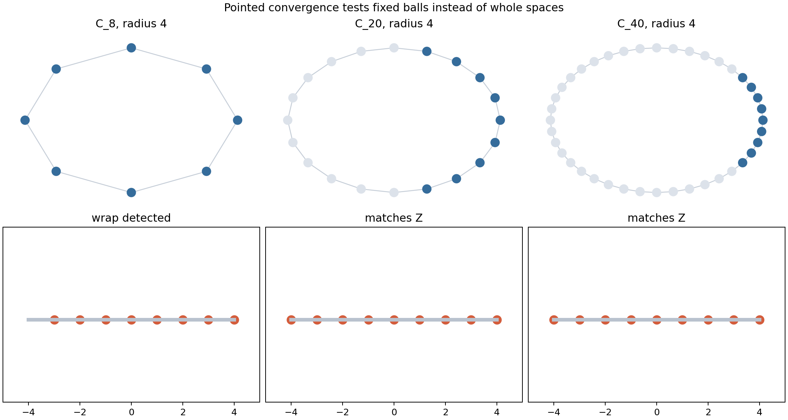
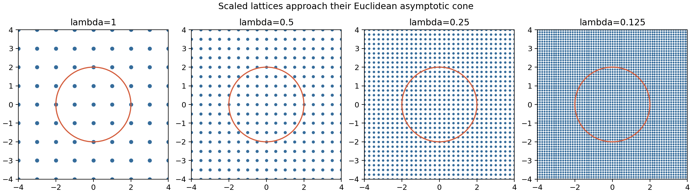
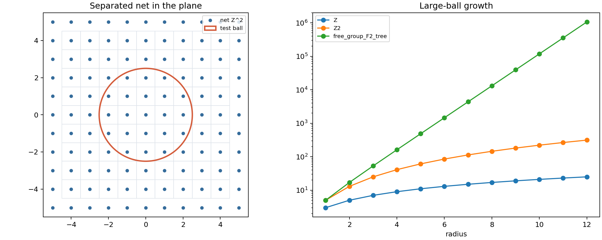
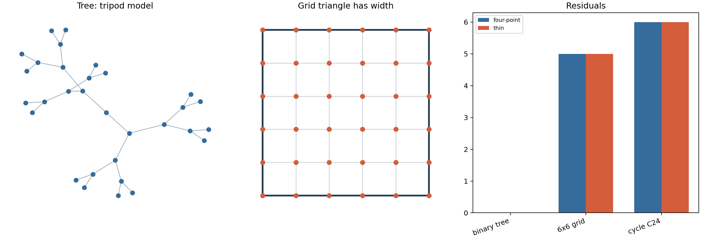
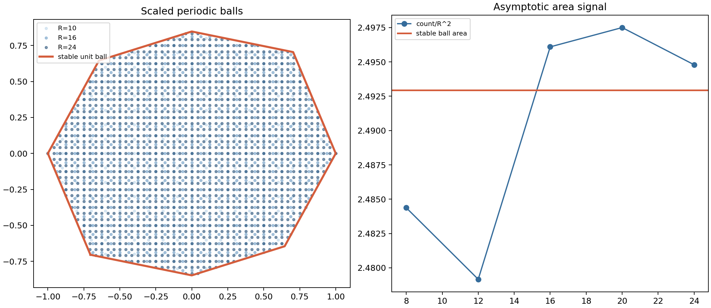

A Course in Metric Geometry, Chapter 08
Canonical notebook: chapter-08-large-scale-geometry/08-large-scale-geometry.ipynb
Source span: printed pages 271-306; PDF pages 286-321.
Which metric properties remain meaningful after ignoring bounded errors and watching spaces from farther and farther away?
Exact distances, local compactness, and fine neighborhood structure can decide the problem.
Bounded errors are allowed; growth, limiting cones, coarse maps, and periodic averages become the main signals.
Compare fixed-radius balls around chosen basepoints.
Rescale metrics and watch the far field enter a bounded window.
Classify spaces up to linear and additive distortion.
Measure how close triangles are to tree-shaped tripods.
Average repeating local rules into stable norms.
Figures, checks, one table, and one local HTML lab supply the numerical evidence.

Fix radius \(R=4\) around a basepoint and compare the induced distance matrix.
Cycles with 20 and 40 vertices match the integer interval; the 8-cycle still sees wraparound.
For each fixed radius, sufficiently large cycles look locally like \(\mathbb{Z}\).
For every fixed radius \(R\) and tolerance \(\varepsilon\), the large \(n\) balls admit an \(\varepsilon\)-accurate comparison.
The marked point prevents the comparison from drifting away to a different part of the space.
| cycle | ball size | interval match |
|---|---|---|
| 8 vertices | 8 | no |
| 20 vertices | 9 | yes |
| 40 vertices | 9 | yes |
The fixed ball has stopped changing once the cycle is large enough relative to the radius.
The whole cycle remains finite. Only the pointed radius-\(R\) view has stabilized.

Study \((X,\lambda_n d,p)\) with \(\lambda_n \to 0\). Large original distances become visible at bounded scale.
The sampled \(\lambda\mathbb{Z}^2\) grid fills the same display window more densely as \(\lambda\) decreases.
\(B_{(X,\lambda d)}(p,R)=B_{(X,d)}(p,R/\lambda)\). A bounded rescaled ball sees a larger original ball.
For \(\lambda\mathbb{Z}^2\), the Euclidean covering bound scales like \(\lambda/\sqrt{2}\).
| \(\lambda\) | mesh | cover |
|---|---|---|
| 1 | 1 | 0.707 |
| 0.5 | 0.5 | 0.354 |
| 0.25 | 0.25 | 0.177 |
| 0.125 | 0.125 | 0.088 |
The local lab records 81, 289, 1089, and 4225 points in the same fixed window as the mesh halves.
Every point of the target lies within a bounded distance of the image.
Local wrinkles may disappear, but large-scale dimension, ends, and growth type can remain detectable.

\(\mathbb{Z}\): 25 points. \(\mathbb{Z}^2\): 313 points. Free group tree: 1,062,881 points.
The exact metric can change, but polynomial degree and exponential branching remain large-scale signals.
Sampled map: identity inclusion from \((\mathbb{Z}^2,\ell^1)\) to Euclidean \(\mathbb{R}^2\).
\(\lambda=\sqrt{2}\), \(C=0\), sampled pairs: 196, violations: 0.
Minimum lower margin: 0.0
Minimum upper margin: 0.4142
The lower margin reaches equality on aligned pairs; the upper margin has room in the sampled window.

In a tree, geodesic triangles collapse onto a tripod. Thinness residuals vanish.
Large rectangles and cycles create points on one side that sit far from the other two sides.
0
four-point delta and thin-triangle residual both vanish.
5
four-point delta 5.0; thin-triangle residual 5.
6
four-point delta 6.0; thin-triangle residual 6.
The grid witness uses opposite corners of a square-like region; the cycle witness uses points separated around the loop. Both create thickness no tree can reproduce with zero error.

\((1,0):1.00\), \((0,1):1.18\), \((1,1):1.42\), \((1,-1):1.55\).
The integer metric differs from the sampled stable norm by at most \(1.8\cdot10^{-15}\) on 360 tested directions.
| radius | count | count/r^2 |
|---|---|---|
| 8 | 159 | 2.484 |
| 12 | 357 | 2.479 |
| 16 | 639 | 2.496 |
| 20 | 999 | 2.498 |
| 24 | 1437 | 2.495 |
2.4929346445
The normalized counts cluster around the area of the stable unit ball.
Maximum sampled residual for test vectors: 0.0.
Pointed balls and rescaled cones turn asymptotic behavior into finite inspection windows.
Quasi-isometries preserve coarse structure while forgiving bounded local errors.
Growth, hyperbolicity residuals, and stable-norm areas expose different large-scale features.
Pick one space from the chapter artifacts. State its basepoint or scaling choice, identify one coarse invariant, and explain which check supports the conclusion.